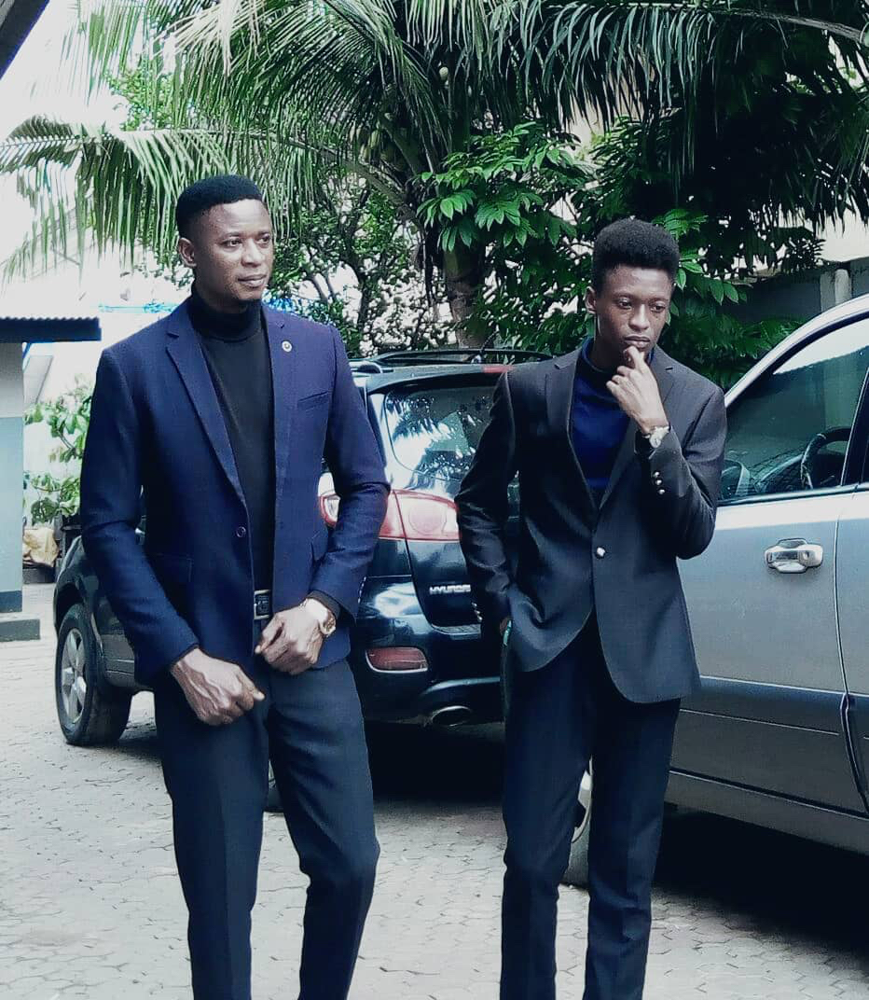
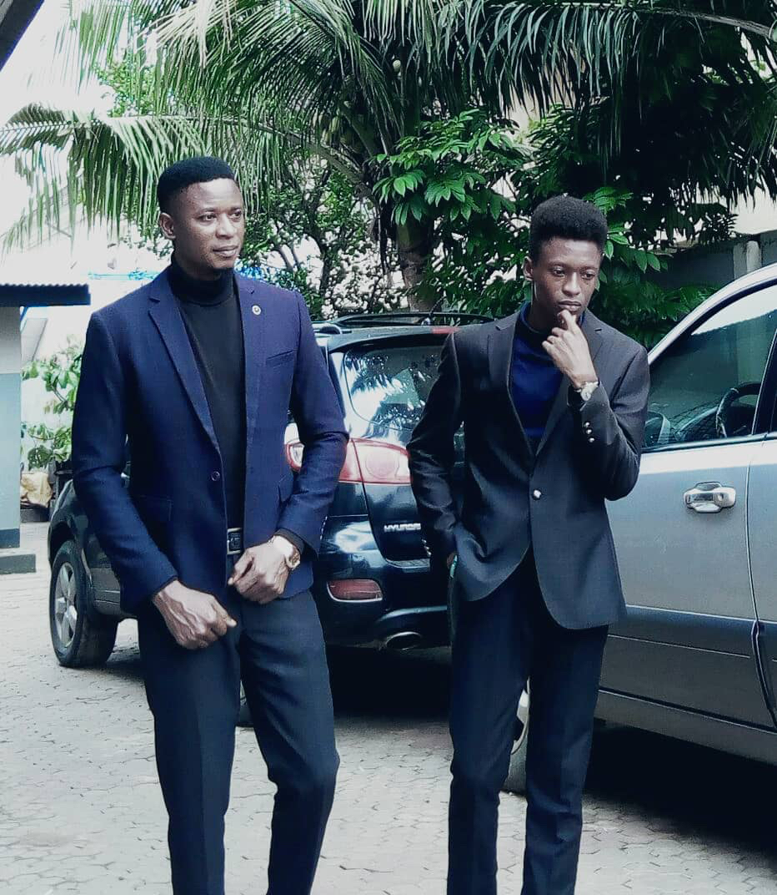

TRENDS
A Yellow Sun dress and Red Lipstick


A yellow Dress and a Red lipstick goes hand in together. the trends is appropriate for a dinner. it goes with the black tone and the light tone. the make will be extremely light due to the bright colours presented by the body
Trouser, Shirt and Jacket
 
Guys nowadays think trousers with shirt makes them look old. meanwhile they appear really smart and perfect in it.trouser and shirt can be wore alone por a jacket can be added to their choice of style. it is wore on coporate occassions like dinner, project defence, dates and any other formal occassions of their choice. it eradites the habit looking unkempt in such a formal attire.
Make up